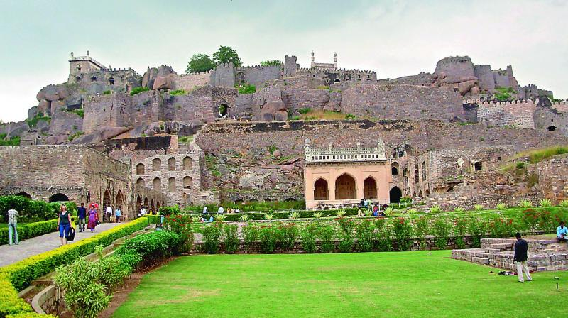
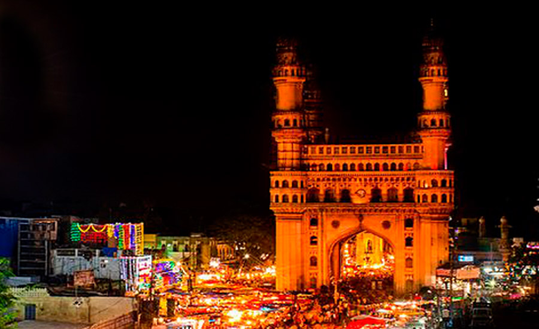

<div>
    <center>
        <h1>Hyberabd</h1>
        <p>Hyderabad, city, Telangana state, south-central India. It is Telangana's largest and most-populous city and is the major urban centre for all of south-central interior India. From 1956 to 2014 Hyderabad was the capital of Andhra Pradesh state, but, with the creation of Telangana from Andhra Pradesh in 2014, it was redesignated as the capital of both states.
        </p>
        
        <h1>History</h1>
        <p>Hyderabad was founded by the Quṭb Shāhī sultans of Golconda, under whom the kingdom of Golconda attained a position of importance second only to that of the Mughal Empire to the north. The old fortress town of Golconda had proved inadequate as the kingdom's capital, and so about 1591 Muḥammad Qulī Quṭb Shah, the fifth of the Quṭb Shahs, built a new city called Hyderabad on the east bank of the Musi River, a short distance from old Golconda. The Charminar, a grand architectural composition in Indo-Saracenic style with open arches and four minarets, is regarded as the supreme achievement of the Quṭb Shāhī period. It formed the centrepiece around which the city was planned. The Mecca Mosque, which was built later, can accommodate 10,000 people. The mosque was the site of a bombing attack in 2007 that killed several Muslims and injured many others. The incident aggravated Muslim-Hindu tensions in the city, which has experienced periodic outbreaks of violence over the years.


        </p>


        <h1>Charminar</h1>
        
    
        <p>Charminar, which means four pillars, was built as a monument and mosque, which later on turned to become a global icon for Hyderabad. It is intriguing to mention that it has been standing tall for nearly four centuries.Charminar is famous for its intricate architecture, which makes it one of the most recognized structures of India. The surrounding Laad Bazaar and the 400 years old mosque on the top floor of Charminar make it famous amongst locals as well as the tourists.</p>
        <p>
        Charminar is a square-shaped structure built out of granite and lime mortar. The monument predominantly has an Islamic-style design, but influences of Hindu architecture can also be seen in its ornamentation. It is flanked by four minarets on every corner which are 48.7 meters high.These attractively packaged cigarettes came to be known as Charminar cigarettes, so much so that every fourth cigarette smoked in India was a Charminar. ... Charminar was the first brand to become the face of the company and was being sold to the Nizam's dominions.
        </p>
        
    </center>
</div>